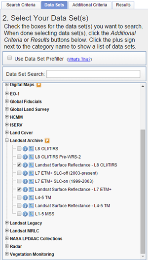

Tutorial deforistation monitoring Peru
Introduction
The bfastSpatial package provides utilities to performs change detection analysis (see DeVries et al. 2015; Dutrieux et al. 2015; J. Verbesselt et al. 2010; J. Verbesselt, Zeileis, and Herold 2012) on time-series of spatial gridded data, such as time-series of remote sensing images (Landsat, MODIS and the likes). The tools provided by bfastSpatial allows a user to perform all the steps of the change detection workflow, from pre-processing raw surface reflectance Landsat data, inventorying and preparing them for analysis to the production and formatting of change detection results. The present document is an addition to the bfast spatial tutorial in which the package will be used for deforistation monitoring based on Landsat scenes from Peru.
In this tutorial the following change detection workflow steps will briefly discussed:
- Downloading remote sensing scenes
- Pre-processing the scenes
- Data invenctory
- Spatial BFASTMonitor
1. Downloading Landsat data from Earth Explorer/espa
To download data from the ESPA website we first need to create a text file which contains the Landsat scene ID's of our area of interest. The common way to access the Landsat archives and retrieve the list is via the Earth Explorer platform. You will need to register for an account.
After logging in on the Earth Explorer platform you can search the Landsat archive by:
- Defining the search criteria
- Choosing data sets
- Setting additional criteria
- Exporting results
For this tutorial we will download scenes by specifying path and row numbers under the path/row tab. We want to find all scenes at path number 5 and row number 68. Click the show button after entering the desired path and row number. A marker will appear on the map and this will make sure only scenes from that area will be downloaded. Set the date range from 1 January 2015 to the current date to download all scenes that are available in that range.

The second step is to select the data sets you wish to order under the Data Sets tab. For this tutorial we will use Landsat Surface Reflectance - L8 OLI/TIRS and Landsat Surface Reflectance - L7 ETM+ from the Landsat Archive.

In step three you can select additional criteria depending on your needs. The criterium we are interested in is the cloud cover. Setting this to less than 80% will filter out imagery that are completely covered by clouds.
The final step is to export your results. In the results tab you can see a list of the scenes that have been found in the archive according to your search criteria. The meta-data of the scenes can be downloaded by clicking export results and specifying the output format. Choose csv. You will receive an email with a link where you can download the requested csv
Placing order at ESPA
ESPA requires a list of scene ID's(eg: LT52302701999134) in a text file as input. We will create this list with an R script that automatically reads the csv, retrieves the ID's and saves them to a text file.
First we want to read the csv in R and retrieve the scene ID's. We will also create the file in which we can save our output.
#read csv file
csv <- read.csv(file = "data/LSR_LANDSAT_8_96563.csv")
#Retrieve scene ID's from csv
sceneID <- as.character(csv$Landsat.Scene.Identifier)
#Create a text file
order_list <- file("output/orderlist.txt", "w")Remember to change the file argument of read.csv() with the "path/filename.csv" pointing to the location of the csv on your own computer. The same goes for the output destination of file().
To save each scene ID on a seperate line in the text file, we will use a loop that retrieves the scene ID's and adds them one by one to the text file with writeLines(). Close the connection to the file at the end to save your output.
#Retrieve the ID's from csv and write them on a new line in the file
for(i in 1:length(sceneID)) {
ID <- sceneID[i]
writeLines(ID, order_list, sep="\n")
}
#close connection to file
close(order_list)The sep="\n" argument creates a new line after adding the ID to the text file. You can check the end result of this script by opening your text file.
The final step requires Logging in to the ESPA platform. Go to the order data page. Here you can upload the text file with the list of scenes you want to have pre-processed. Select the Surface reflectance NDMI and CFMask layers and submit your order. You will receive an email when your order is ready for download. Use a download manager (e.g. Bulk Download Application or DOwnloadThemAll plugin for Firefox) to download all .tar.gz files.
2. Pre-processing the Peru scenes
To limit the processing time of the 'BfastSpatial' functions we will first crop all Landsat scenes we retrieved from ESPA to the extent of our area of interest. The extent of this area is the same extend as the forestMask